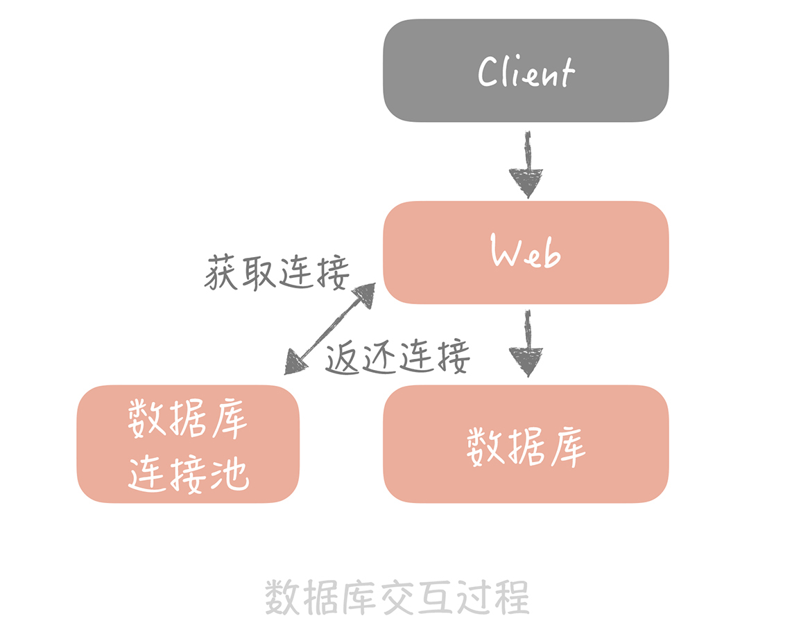
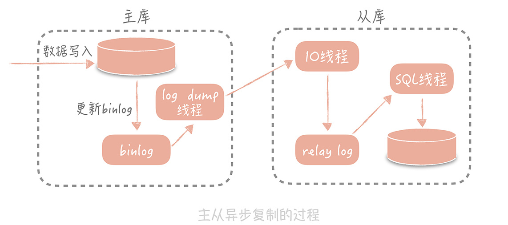
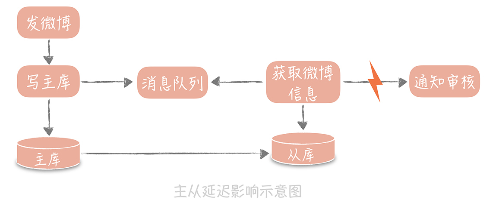

- 00 开篇词 为什么你要学习高并发系统设计？.md.html
- 01 高并发系统：它的通用设计方法是什么？.md.html
- 02 架构分层：我们为什么一定要这么做？.md.html
- 03 系统设计目标（一）：如何提升系统性能？.md.html
- 04 系统设计目标（二）：系统怎样做到高可用？.md.html
- 05 系统设计目标（三）：如何让系统易于扩展？.md.html
- 06 面试现场第一期：当问到组件实现原理时，面试官是在刁难你吗？.md.html
- 07 池化技术：如何减少频繁创建数据库连接的性能损耗？.md.html
- 08 数据库优化方案（一）：查询请求增加时，如何做主从分离？.md.html
- 09 数据库优化方案（二）：写入数据量增加时，如何实现分库分表？.md.html
- 10 发号器：如何保证分库分表后ID的全局唯一性？.md.html
- 11 NoSQL：在高并发场景下，数据库和NoSQL如何做到互补？.md.html
- 12 缓存：数据库成为瓶颈后，动态数据的查询要如何加速？.md.html
- 13 缓存的使用姿势（一）：如何选择缓存的读写策略？.md.html
- 14 缓存的使用姿势（二）：缓存如何做到高可用？.md.html
- 15 缓存的使用姿势（三）：缓存穿透了怎么办？.md.html
- 16 CDN：静态资源如何加速？.md.html
- 17 消息队列：秒杀时如何处理每秒上万次的下单请求？.md.html
- 18 消息投递：如何保证消息仅仅被消费一次？.md.html
- 19 消息队列：如何降低消息队列系统中消息的延迟？.md.html
- 20 面试现场第二期：当问到项目经历时，面试官究竟想要了解什么？.md.html
- 21 系统架构：每秒1万次请求的系统要做服务化拆分吗？.md.html
- 22 微服务架构：微服务化后，系统架构要如何改造？.md.html
- 23 RPC框架：10万QPS下如何实现毫秒级的服务调用？.md.html
- 24 注册中心：分布式系统如何寻址？.md.html
- 25 分布式Trace：横跨几十个分布式组件的慢请求要如何排查？.md.html
- 26 负载均衡：怎样提升系统的横向扩展能力？.md.html
- 27 API网关：系统的门面要如何做呢？.md.html
- 28 多机房部署：跨地域的分布式系统如何做？.md.html
- 29 Service Mesh：如何屏蔽服务化系统的服务治理细节？.md.html
- 30 给系统加上眼睛：服务端监控要怎么做？.md.html
- 31 应用性能管理：用户的使用体验应该如何监控？.md.html
- 32 压力测试：怎样设计全链路压力测试平台？.md.html
- 33 配置管理：成千上万的配置项要如何管理？.md.html
- 34 降级熔断：如何屏蔽非核心系统故障的影响？.md.html
- 35 流量控制：高并发系统中我们如何操纵流量？.md.html
- 36 面试现场第三期：你要如何准备一场技术面试呢？.md.html
- 37 计数系统设计（一）：面对海量数据的计数器要如何做？.md.html
- 38 计数系统设计（二）：50万QPS下如何设计未读数系统？.md.html
- 39 信息流设计（一）：通用信息流系统的推模式要如何做？.md.html
- 40 信息流设计（二）：通用信息流系统的拉模式要如何做？.md.html
- 加餐 数据的迁移应该如何做？.md.html
- 期中测试 10道高并发系统设计题目自测.md.html
- 用户故事 从“心”出发，我还有无数个可能.md.html
- 结束语 学不可以已.md.html
08 数据库优化方案（一）：查询请求增加时，如何做主从分离？
你好，我是唐扬。
上节课，我们用池化技术解决了数据库连接复用的问题，这时，你的垂直电商系统虽然整体架构上没有变化，但是和数据库交互的过程有了变化，在你的 Web 工程和数据库之间增加了数据库连接池，减少了频繁创建连接的成本，从上节课的测试来看性能上可以提升 80%。现在的架构图如下所示：

此时，你的数据库还是单机部署，依据一些云厂商的 Benchmark 的结果，在 4 核 8G 的机器上运 MySQL 5.7 时，大概可以支撑 500 的 TPS 和 10000 的 QPS。这时，运营负责人说正在准备双十一活动，并且公司层面会继续投入资金在全渠道进行推广，这无疑会引发查询量骤然增加的问题。那么今天，我们就一起来看看当查询请求增加时，应该如何做主从分离来解决问题。
主从读写分离
其实，大部分系统的访问模型是读多写少，读写请求量的差距可能达到几个数量级。
这很好理解，刷朋友圈的请求量肯定比发朋友圈的量大，淘宝上一个商品的浏览量也肯定远大于它的下单量。因此，我们优先考虑数据库如何抗住更高的查询请求，那么首先你需要把读写流量区分开，因为这样才方便针对读流量做单独的扩展，这就是我们所说的主从读写分离。
它其实是个流量分离的问题，就好比道路交通管制一样，一个四车道的大马路划出三个车道给领导外宾通过，另外一个车道给我们使用，优先保证领导先行，就是这个道理。
这个方法本身是一种常规的做法，即使在一个大的项目中，它也是一个应对数据库突发读流量的有效方法。
我目前的项目中就曾出现过前端流量突增导致从库负载过高的问题，DBA 兄弟会优先做一个从库扩容上去，这样对数据库的读流量就会落入到多个从库上，从库的负载就降了下来，然后研发同学再考虑使用什么样的方案将流量挡在数据库层之上。
主从读写的两个技术关键点
一般来说在主从读写分离机制中，我们将一个数据库的数据拷贝为一份或者多份，并且写入到其它的数据库服务器中，原始的数据库我们称为主库，主要负责数据的写入，拷贝的目标数据库称为从库，主要负责支持数据查询。可以看到，主从读写分离有两个技术上的关键点：
\1. 一个是数据的拷贝，我们称为主从复制； \2. 在主从分离的情况下，我们如何屏蔽主从分离带来的访问数据库方式的变化，让开发同学像是在使用单一数据库一样。
接下来，我们分别来看一看。
1. 主从复制
我先以 MySQL 为例介绍一下主从复制。
MySQL 的主从复制是依赖于 binlog 的，也就是记录 MySQL 上的所有变化并以二进制形式保存在磁盘上二进制日志文件。主从复制就是将 binlog 中的数据从主库传输到从库上，一般这个过程是异步的，即主库上的操作不会等待 binlog 同步的完成。
**主从复制的过程是这样的：**首先从库在连接到主节点时会创建一个 IO 线程，用以请求主库更新的 binlog，并且把接收到的 binlog 信息写入一个叫做 relay log 的日志文件中，而主库也会创建一个 log dump 线程来发送 binlog 给从库；同时，从库还会创建一个 SQL 线程读取 relay log 中的内容，并且在从库中做回放，最终实现主从的一致性。这是一种比较常见的主从复制方式。
在这个方案中，使用独立的 log dump 线程是一种异步的方式，可以避免对主库的主体更新流程产生影响，而从库在接收到信息后并不是写入从库的存储中，是写入一个 relay log，是避免写入从库实际存储会比较耗时，最终造成从库和主库延迟变长。

你会发现，基于性能的考虑，主库的写入流程并没有等待主从同步完成就会返回结果，那么在极端的情况下，比如说主库上 binlog 还没有来得及刷新到磁盘上就出现了磁盘损坏或者机器掉电，就会导致 binlog 的丢失，最终造成主从数据的不一致。不过，这种情况出现的概率很低，对于互联网的项目来说是可以容忍的。
做了主从复制之后，我们就可以在写入时只写主库，在读数据时只读从库，这样即使写请求会锁表或者锁记录，也不会影响到读请求的执行。同时呢，在读流量比较大的情况下，我们可以部署多个从库共同承担读流量，这就是所说的“一主多从”部署方式，在你的垂直电商项目中就可以通过这种方式来抵御较高的并发读流量。另外，从库也可以当成一个备库来使用，以避免主库故障导致数据丢失。
**那么你可能会说，是不是我无限制地增加从库的数量就可以抵抗大量的并发呢？**实际上并不是的。因为随着从库数量增加，从库连接上来的 IO 线程比较多，主库也需要创建同样多的 log dump 线程来处理复制的请求，对于主库资源消耗比较高，同时受限于主库的网络带宽，所以在实际使用中，一般一个主库最多挂 3～5 个从库。
**当然，主从复制也有一些缺陷，**除了带来了部署上的复杂度，还有就是会带来一定的主从同步的延迟，这种延迟有时候会对业务产生一定的影响，我举个例子你就明白了。
在发微博的过程中会有些同步的操作，像是更新数据库的操作，也有一些异步的操作，比如说将微博的信息同步给审核系统，所以我们在更新完主库之后，会将微博的 ID 写入消息队列，再由队列处理机依据 ID 在从库中获取微博信息再发送给审核系统。此时如果主从数据库存在延迟，会导致在从库中获取不到微博信息，整个流程会出现异常。

这个问题解决的思路有很多，核心思想就是尽量不去从库中查询信息，纯粹以上面的例子来说，我就有三种解决方案：
**第一种方案是数据的冗余。**你可以在发送消息队列时不仅仅发送微博 ID，而是发送队列处理机需要的所有微博信息，借此避免从数据库中重新查询数据。
**第二种方案是使用缓存。**我可以在同步写数据库的同时，也把微博的数据写入到 Memcached 缓存里面，这样队列处理机在获取微博信息的时候会优先查询缓存，这样也可以保证数据的一致性。
**最后一种方案是查询主库。**我可以在队列处理机中不查询从库而改为查询主库。不过，这种方式使用起来要慎重，要明确查询的量级不会很大，是在主库的可承受范围之内，否则会对主库造成比较大的压力。
我会优先考虑第一种方案，因为这种方式足够简单，不过可能造成单条消息比较大，从而增加了消息发送的带宽和时间。
缓存的方案比较适合新增数据的场景，在更新数据的场景下，先更新缓存可能会造成数据的不一致，比方说两个线程同时更新数据，线程 A 把缓存中的数据更新为 1，此时另一个线程 B 把缓存中的数据更新为 2，然后线程 B 又更新数据库中的数据为 2，此时线程 A 更新数据库中的数据为 1，这样数据库中的值（1）和缓存中的值（2）就不一致了。
最后，若非万不得已的情况下，我不会使用第三种方案。原因是这种方案要提供一个查询主库的接口，在团队开发的过程中，你很难保证其他同学不会滥用这个方法，而一旦主库承担了大量的读请求导致崩溃，那么对于整体系统的影响是极大的。
所以对这三种方案来说，你要有所取舍，根据实际项目情况做好选择。
**另外，主从同步的延迟，是我们排查问题时很容易忽略的一个问题。**有时候我们遇到从数据库中获取不到信息的诡异问题时，会纠结于代码中是否有一些逻辑会把之前写入的内容删除，但是你又会发现，过了一段时间再去查询时又可以读到数据了，这基本上就是主从延迟在作怪。所以，一般我们会把从库落后的时间作为一个重点的数据库指标做监控和报警，正常的时间是在毫秒级别，一旦落后的时间达到了秒级别就需要告警了。
2. 如何访问数据库
我们已经使用主从复制的技术将数据复制到了多个节点，也实现了数据库读写的分离，这时，对于数据库的使用方式发生了变化。以前只需要使用一个数据库地址就好了，现在需要使用一个主库地址和多个从库地址，并且需要区分写入操作和查询操作，如果结合下一节课中要讲解的内容“分库分表”，复杂度会提升更多。为了降低实现的复杂度，业界涌现了很多数据库中间件来解决数据库的访问问题，这些中间件可以分为两类。
第一类以淘宝的 TDDL（ Taobao Distributed Data Layer）为代表，以代码形式内嵌运行在应用程序内部。你可以把它看成是一种数据源的代理，它的配置管理着多个数据源，每个数据源对应一个数据库，可能是主库，可能是从库。当有一个数据库请求时，中间件将 SQL 语句发给某一个指定的数据源来处理，然后将处理结果返回。
这一类中间件的优点是简单易用，没有多余的部署成本，因为它是植入到应用程序内部，与应用程序一同运行的，所以比较适合运维能力较弱的小团队使用；缺点是缺乏多语言的支持，目前业界这一类的主流方案除了 TDDL，还有早期的网易 DDB，它们都是 Java 语言开发的，无法支持其他的语言。另外，版本升级也依赖使用方更新，比较困难。
另一类是单独部署的代理层方案，这一类方案代表比较多，如早期阿里巴巴开源的 Cobar，基于 Cobar 开发出来的 Mycat，360 开源的 Atlas，美团开源的基于 Atlas 开发的 DBProxy 等等。
这一类中间件部署在独立的服务器上，业务代码如同在使用单一数据库一样使用它，实际上它内部管理着很多的数据源，当有数据库请求时，它会对 SQL 语句做必要的改写，然后发往指定的数据源。
它一般使用标准的 MySQL 通信协议，所以可以很好地支持多语言。由于它是独立部署的，所以也比较方便进行维护升级，比较适合有一定运维能力的大中型团队使用。它的缺陷是所有的 SQL 语句都需要跨两次网络：从应用到代理层和从代理层到数据源，所以在性能上会有一些损耗。

这些中间件，对你而言，可能并不陌生，但是我想让你注意到是，在使用任何中间件的时候一定要保证对于中间件有足够深入的了解，否则一旦出了问题没法快速地解决就悲剧了。
**我之前的一个项目中，**一直使用自研的一个组件来实现分库分表，后来发现这套组件有一定几率会产生对数据库多余的连接，于是团队讨论后决定替换成 Sharding-JDBC。原本以为是一次简单的组件切换，结果上线后发现两个问题：一是因为使用姿势不对，会偶发地出现分库分表不生效导致扫描所有库表的情况，二是偶发地出现查询延时达到秒级别。由于缺少对于 Sharding-JDBC 足够的了解，这两个问题我们都没有很快解决，后来不得已只能切回原来的组件，在找到问题之后再进行切换。
课程小结
本节课，我带你了解了查询量增加时，我们如何通过主从分离和一主多从部署抵抗增加的数据库流量的，你除了掌握主从复制的技术之外，还需要了解主从分离会带来什么问题以及它们的解决办法。这里我想让你明确的要点主要有：
\1. 主从读写分离以及部署一主多从可以解决突发的数据库读流量，是一种数据库横向扩展的方法；
\2. 读写分离后，主从的延迟是一个关键的监控指标，可能会造成写入数据之后立刻读的时候读取不到的情况；
\3. 业界有很多的方案可以屏蔽主从分离之后数据库访问的细节，让开发人员像是访问单一数据库一样，包括有像 TDDL、Sharding-JDBC 这样的嵌入应用内部的方案，也有像 Mycat 这样的独立部署的代理方案。
其实，我们可以把主从复制引申为存储节点之间互相复制存储数据的技术，它可以实现数据的冗余，以达到备份和提升横向扩展能力的作用。在使用主从复制这个技术点时，你一般会考虑两个问题：
\1. 主从的一致性和写入性能的权衡，如果你要保证所有从节点都写入成功，那么写入性能一定会受影响；如果你只写入主节点就返回成功，那么从节点就有可能出现数据同步失败的情况，从而造成主从不一致，而在互联网的项目中，我们一般会优先考虑性能而不是数据的强一致性。
\2. 主从的延迟问题，很多诡异的读取不到数据的问题都可能会和它有关，如果你遇到这类问题不妨先看看主从延迟的数据。
我们采用的很多组件都会使用到这个技术，比如，Redis 也是通过主从复制实现读写分离；Elasticsearch 中存储的索引分片也可以被复制到多个节点中；写入到 HDFS 中文件也会被复制到多个 DataNode 中。只是不同的组件对于复制的一致性、延迟要求不同，采用的方案也不同。但是这种设计的思想是通用的，是你需要了解的，这样你在学习其他存储组件的时候就能够触类旁通了。